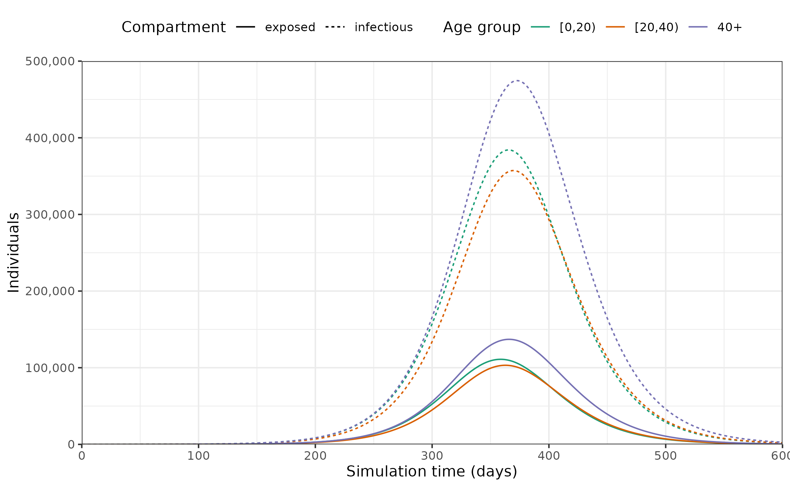

Getting started with epidemic scenario modelling components
Source:vignettes/epidemics.Rmd
epidemics.RmdThis initial vignette shows to get started with using the epidemics package.
Further vignettes include guidance on “Modelling the implementation of vaccination regimes”, as well as on“Modelling non-pharmaceutical interventions (NPIs) to reduce social contacts” and “Modelling multiple overlapping NPIs”.
There is also guidance available on specific models in the model library, such as the Vacamole model developed by RIVM, the Dutch Institute for Public Health.
Code
Prepare population and initial conditions
Prepare population and contact data.
Note on social contacts data
Note that the social contacts matrices provided by the socialmixr package follow a format wherein the matrix \(M_{ij}\) represents contacts from group \(i\) to group \(j\).
However, epidemic models traditionally adopt the notation that \(M_{ij}\) defines contacts to \(i\) from \(j\) (Wallinga, Teunis, and Kretzschmar 2006).
\(q M_{ij} / n_i\) then defines the probability of infection, where \(q\) is a scaling factor dependent on \(R_0\) (or another measure of infection transmissibility), and \(n_i\) is the population proportion of group \(i\). The ODEs in epidemics also follow this convention.
For consistency with this notation, social contact matrices from socialmixr need to be transposed (using t()) before they are used with epidemics.
Code
# load contact and population data from socialmixr::polymod
polymod <- socialmixr::polymod
contact_data <- socialmixr::contact_matrix(
polymod,
countries = "United Kingdom",
age.limits = c(0, 20, 40),
symmetric = TRUE
)
#> Removing participants that have contacts without age information. To change this behaviour, set the 'missing.contact.age' option
# prepare contact matrix
contact_matrix <- t(contact_data$matrix)
# prepare the demography vector
demography_vector <- contact_data$demography$population
names(demography_vector) <- rownames(contact_matrix)
# view contact matrix and demography
contact_matrix
#> age.group
#> contact.age.group [0,20) [20,40) 40+
#> [0,20) 7.883663 2.794154 1.565665
#> [20,40) 3.120220 4.854839 2.624868
#> 40+ 3.063895 4.599893 5.005571
demography_vector
#> [0,20) [20,40) 40+
#> 14799290 16526302 28961159Prepare initial conditions for each age group.
Code
# initial conditions
initial_i <- 1e-6
initial_conditions <- c(
S = 1 - initial_i, E = 0, I = initial_i, R = 0, V = 0
)
# build for all age groups
initial_conditions <- rbind(
initial_conditions,
initial_conditions,
initial_conditions
)
# assign rownames for clarity
rownames(initial_conditions) <- rownames(contact_matrix)
# view initial conditions
initial_conditions
#> S E I R V
#> [0,20) 0.999999 0 1e-06 0 0
#> [20,40) 0.999999 0 1e-06 0 0
#> 40+ 0.999999 0 1e-06 0 0Prepare a population as a population class object.
Code
uk_population <- population(
name = "UK",
contact_matrix = contact_matrix,
demography_vector = demography_vector,
initial_conditions = initial_conditions
)
uk_population
#> <population> object
#>
#> Population name:
#> "UK"
#>
#> Demography
#> [0,20): 14,799,290 (20%)
#> [20,40): 16,526,302 (30%)
#> 40+: 28,961,159 (50%)
#>
#> Contact matrix
#> age.group
#> contact.age.group [0,20) [20,40) 40+
#> [0,20) 7.883663 2.794154 1.565665
#> [20,40) 3.120220 4.854839 2.624868
#> 40+ 3.063895 4.599893 5.005571Run epidemic model
Code
# run an epidemic model using `epidemic`
output <- model_default(
population = uk_population,
time_end = 600, increment = 1.0
)Prepare data and visualise infections
Plot epidemic over time, showing only the number of individuals in the exposed and infected compartments.
Code
# plot figure of epidemic curve
filter(output, compartment %in% c("exposed", "infectious")) %>%
ggplot(
aes(
x = time,
y = value,
col = demography_group,
linetype = compartment
)
) +
geom_line() +
scale_y_continuous(
labels = scales::comma
) +
scale_colour_brewer(
palette = "Dark2",
name = "Age group"
) +
expand_limits(
y = c(0, 500e3)
) +
coord_cartesian(
expand = FALSE
) +
theme_bw() +
theme(
legend.position = "top"
) +
labs(
x = "Simulation time (days)",
linetype = "Compartment",
y = "Individuals"
)